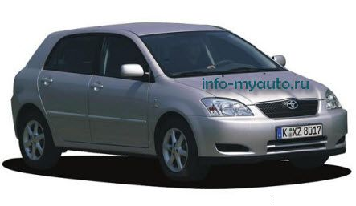

Информация от 02-08-2011.
Имидж производителя беспроблемных машин позволил Toyota вполне обоснованно продавать свои малолитражки по несколько завышенным ценам. Причем наши соотечественники закрывали глаза даже на весьма пресный дизайн автомобиля и его популярность у угонщиков: качество перекрывало все. Некоторой компенсацией за неказистую внешность была широкая гамма модификаций: 3- и 5-дверный хэтчбеки, седан и универсал, а также минивэн Corolla Verso. Седан традиционно пользовался у российских автовладельцев большим спросом, но в последнее время хитами продаж, особенно в больших городах, были и пятидверки.

На нашем вторичном рынке Toyota Corolla встречается в основном с бензиновыми моторами объемом 1,4 л 97 л. с. и 1,6 л 110 л. с., которые устанавливались и на российские версии. Из США везли Toyota с 1,8-литровым двигателем 132 л. с.. На «заряженных» хэтчбеках Т-Sport стоял 192-сильный силовой агрегат такого же объема. Были и два 2-литровых турбодизеля 90—110 л. с..
Стандартной коробкой передач для гражданских версий служила 5-ступенчатая «механика», а для T-Sport — 6-ступенчатая. Автомат в качестве опции предлагался со всеми моторами, кроме базового 1,4-литрового.
Corolla приятно удивляет своим внутренним простором. На передних креслах очень свободно — даже автору этих строк ростом 185 см не понадобилось до конца отодвигать кресло. Не сэкономила Toyota и на отделочных материалах, что в целом нехарактерно для японских автомобилей гольф-класса. Правда, на щедрую комплектацию можно не рассчитывать.
Базовая Toyota Corolla у нас предлагалась с АBS, двумя подушками безопасности на машинах из Европы их четыре, иммобилайзером, аудиоподготовкой и передними электростеклоподъемниками с 2004 года. Однако подержанные экземпляры редко встретишь без кондиционера, электропакета и магнитолы.
Несмотря на скромные размеры и принадлежность к гольф-классу, Toyota Corolla наделена самой современной техни-кой. Например, моторы имеют приличную мощность при сравнительно скромном рабочем объеме. Правда, иногда обилие ноу-хау дает сбой. Так, в системе изменения фаз механизма газораспределения VVT-i есть слабое место — гидравлическая муфта. Ее поломка обычно тянет на 10 000 руб. вместе с деталями и работой.
Двигатели объемом 1,4 л и 1,6 л отличаются чрезмерным расходом моторного масла. Но эту проблему научились успешно решать в дилерских техцентрах. Периодически выходит из строя натяжной ролик приводного ремня 3900 руб. из-за поломки микроамортизатора этого самого ролика. Ремонт в общей сложности стоит около 6000 руб.
Трансмиссия долговечна: прикончить механическую коробку нереально, а вывести из строя проверенный временем автомат, конечно, можно, но только если очень постараться.
Подвеска без сюрпризов. В рулевом механизме иногда начинает стучать рейка. Ее, как правило, меняют по гарантии. Но если эта неисправность возникнет уже по окончании гарантийного срока, установка новой рейки обойдется владельцу примерно в 27 000 руб.